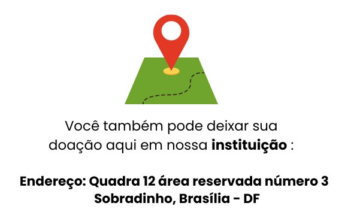
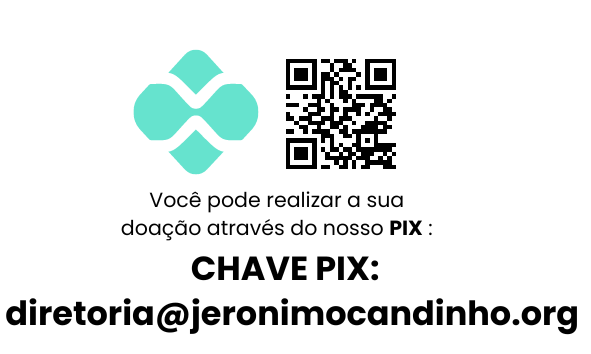
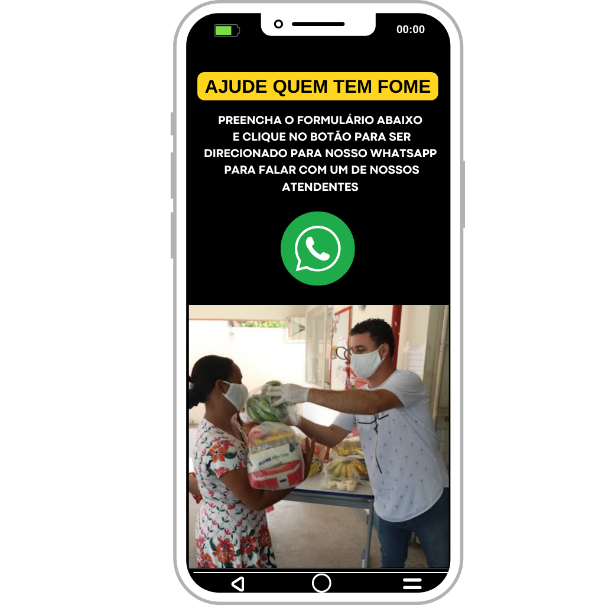

Doe aqui
A Osjc ajuda famílias a saírem da vulnerabilidade social. Sua contribuição é essencial para manter programas de amparo e proteção em todas as fases da vida.
Nossa missão
Ajude quem tem fome
A desnutrição é responsável por quase metade das mortes de crianças menores de cinco anos em todo o mundo, o que equivale a cerca de 3 milhões de vidas perdidas a cada ano.
No projeto Ajude quem tem fome, nosso compromisso com a comunidade é impulsionado por um objetivo primordial: proporcionar esperança e apoio aos mais necessitados. Estamos emocionados em compartilhar que, graças ao apoio de doadores e voluntários, conseguimos ajudar mais de 180 famílias por semana a terem acesso a alimentos nutritivos e essenciais.
Dados bancários para doação
BANCO: 070 - BRB BANCO DE BRASÍLIA S/A
AGÊNCIA: 050 PONTA NORTE
CONTA CORRENTE: 050.022029-8
FAVORECIDO: OBRAS SOCIAIS C E F J CANDINHO
Clique para copiar
Nossos Projetos em Ação

Entre em contato para doar
